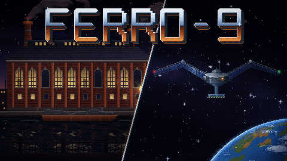
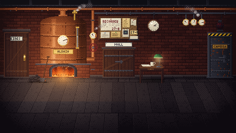
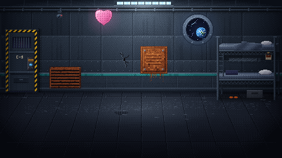

Ciència-ficció retrofuturista
Ferro-9
Dues dones, 120 anys i una paret entremig. Tot el que envies canvia el que hi trobaràs.
L'Iri fa el torn de nit en una fàbrica de ferro-9. La Vet és presonera a La Gavina, una presó en òrbita feta amb les restes d'aquella mateixa fàbrica, i d'aquí a tres dies la «reciclaran». Una finestra de fase les connecta: el que una amaga al passat, l'altra ho troba al present.
Juga a Ferro-9